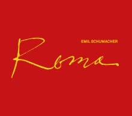

EMIL SCHUMACHER
ROMA. EINE HOMMAGE AN ITALIEN
Bereits seit den 1950er-Jahren bestand eine enge Verbindung Schumachers mit Italien. Mit Künstlern wie Alberto Burri, Lucio Fontana oder Emilio Vedova war dort eine eigene bedeutende Szene informeller Kunst entstanden. Auch das Interesse am Werk Schumachers war groß und führte zu regelmäßigen Einladungen nach Mailand, Florenz, Venedig und nicht zuletzt nach Rom, wo er noch 1996 eine große Mosaikwand schuf. Die in Italien und vor allem in Rom geschaffenen Werke werden erstmals als eigener Werkkomplex präsentiert.
ROMA. EINE HOMMAGE AN ITALIEN
Hg.: Ulrich Schumacher und Rouven Lotz.
Mit einem Vorwort von Ulrich Schumacher sowie einem Beitrag von Heinz Spielmann
80 Seiten, ca. 50 Abbildungen, Leineneinband mit aufwändiger Prägung, € 19,90 (€ 24,90 im Buchhandel)
ISBN: 978-3-86206-738-1
Erhältlich unter info@esmh.de